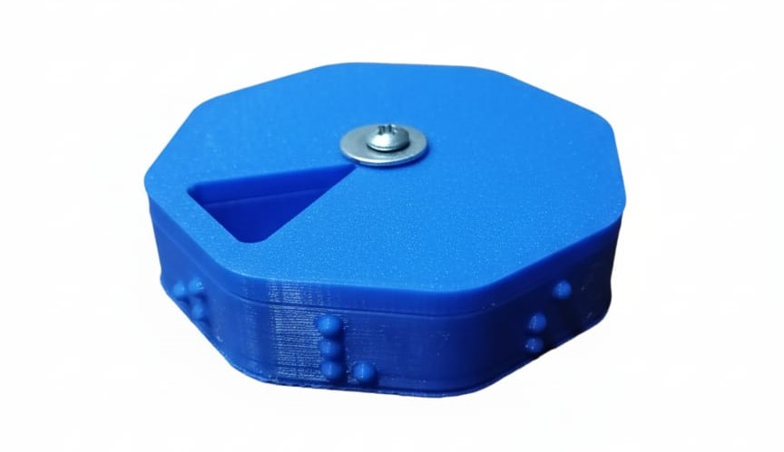

Nuestro Pastillero

CicloMed es un pastillero semanal diseñado para facilitar la organización de los medicamentos y hacer que su uso sea más accesible para todas las personas. Está fabricado mediante impresión 3D y cuenta con compartimientos para organizar la medicación de cada día de la semana. Una de sus principales características es la incorporación de las iniciales de los días en sistema Braille y en letras grandes, permitiendo que personas con discapacidad visual puedan identificar los compartimientos de manera más sencilla e independiente. Su diseño busca combinar practicidad, accesibilidad y comodidad en un producto reutilizable y pensado para el uso cotidiano.
Especificaciones
especificaciones
Nuestro proyecto
CicloMed nació como un proyecto escolar con la idea de utilizar la tecnología para resolver una necesidad de la vida cotidiana. Nuestro objetivo es crear un producto que no solo ayude a organizar los medicamentos, sino que también promueva la autonomía y la inclusión. A través de la impresión 3D buscamos combinar innovación y sostenibilidad para desarrollar una alternativa diferente a los pastilleros tradicionales. De esta manera, CicloMed busca demostrar que la tecnología puede utilizarse para crear soluciones simples que tengan un impacto positivo en la vida de las personas.
Sobre nosotros
Somos un grupo de 4 estudiantes de 6to año del colegio técnico EET N°33 Director Carlos Silva. Venimos desarrolando y puliendo detalles del proyecto desde mediados de 2025. Nuestros objetivos eran desarrollar un emprendimiento vuable cumpliendo ciertos requisitos como cumplir un objetivo del desarrollo sostenible (por eso nos decidimos por un pastillero, por que cumple el objetivo de "Salud y bienestar"), estar relacionado con nuestra especialidad informatica (Eso lo cumplimos mediante el modelado 3D del pastillero y su posterior impresion) y calificar como una economía moderna (Nosotros calificamos como economia verde al usar plastico reciclado).
Marco legal
Explicacion del marco legal
Investigacion de mercado y encuestas
Realizamos una encuesta a 50 personas para conocer la aceptación de CicloMed, especialmente entre personas con pérdida total o reducida de la visión. Los resultados fueron muy positivos: el 78% mostró interés en adquirir el producto, mientras que el 88% estaría dispuesto a pagar $5.000 o más. Además, el 48% afirmó que recomendaría o regalaría el producto. Las personas con pérdida total de la visión mostraron una mayor aceptación y predisposición a adquirirlo. Estos resultados indican que existe una necesidad que actualmente no está siendo cubierta por productos similares y que CicloMed tiene una buena oportunidad dentro del mercado.
Contacto
Contactos